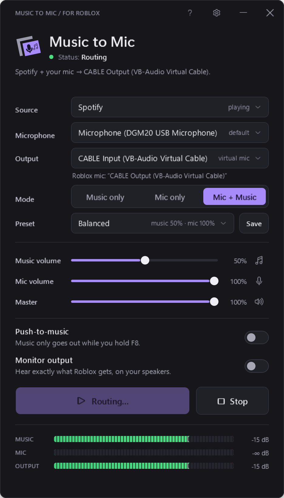
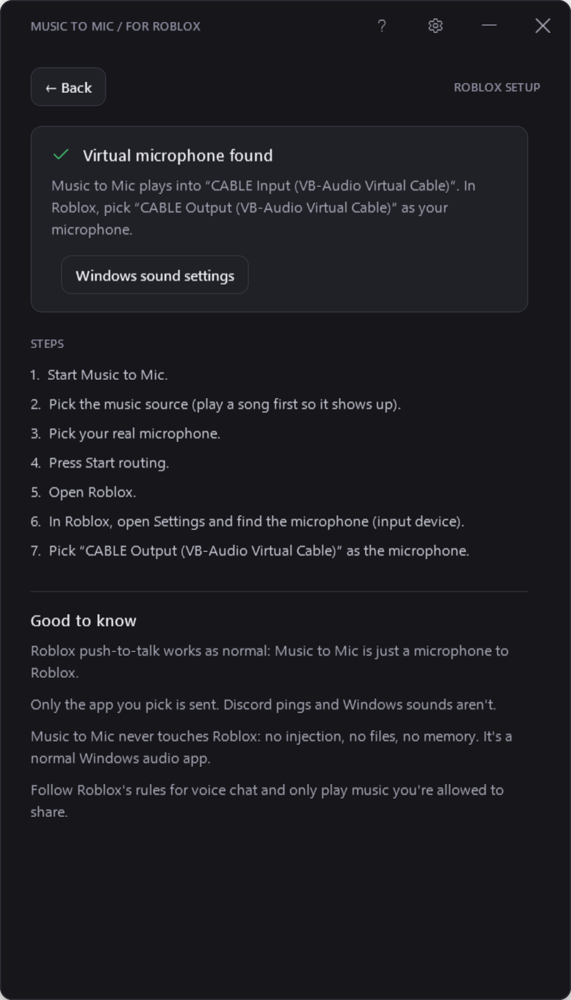

Set up Music to Mic
About five minutes, and you only do it once. You need Windows 10 (version 2004 or newer) or Windows 11, and voice chat turned on for your Roblox account.
1Download Music to Mic
It's one file, MusicToMic.exe, about 250 KB. There's no installer: put it anywhere you like, such as your Documents folder, and double-click it.
If Windows says "Windows protected your PC", click More info, then Run anyway. It shows because the app isn't code-signed yet. Only download it from this site or the GitHub releases.
2Install VB-CABLE
VB-CABLE is a free virtual audio cable made by VB-Audio. Music to Mic plays into one end (CABLE Input) and Roblox listens to the other end (CABLE Output) as a microphone. Windows can't create a new mic without a driver like this.
- Go to vb-audio.com/Cable and download the Windows package (
VBCABLE_Driver_Pack, a zip file). - Right-click the zip and choose Extract All, then open the new folder.
- Right-click
VBCABLE_Setup_x64.exeand choose Run as administrator. Click Yes when Windows asks. - Click Install Driver, then OK when it's done.
- Restart your PC (VB-Audio recommends it).
Already have VoiceMeeter or Virtual Audio Cable? Those work too, and Music to Mic finds them by itself.
3Check your speakers and mic
After installing VB-CABLE, Windows sometimes switches your default speakers to CABLE Input. Then you hear nothing, and every sound on your PC goes into the virtual mic. Check it once:
- Open Settings › System › Sound (or right-click the speaker icon by the clock and choose Sound settings).
- Under Output, pick your real speakers or headphones, not CABLE Input.
- Under Input, pick your real microphone, not CABLE Output.
Music to Mic warns you with "Check your speakers" if Windows is playing everything into the cable.
4Pick the music and your mic
Start a song first in Spotify, YouTube or any app, so it shows up in the list. Then open Music to Mic and choose:
- Source
- The app playing the music, like Spotify or Google Chrome
- Microphone
- Your real microphone
- Output
- CABLE Input (VB-Audio Virtual Cable) (picked for you)
- Mode
- Mic + Music to talk over the music, or Music only
Press Start routing. The status turns green and the MUSIC and OUTPUT meters start moving.

Use the Background Music preset (music 25%, mic 100%) so people can still hear you. Keep the OUTPUT meter in the green and yellow.
5Choose the mic in Roblox
- Join an experience with voice chat.
- Press Esc to open the Roblox menu, then go to Settings.
- Find the microphone setting (input device) and choose CABLE Output (VB-Audio Virtual Cable).
- Close the menu and unmute your mic in Roblox. People near you now hear your voice and the music.
Don't see CABLE Output in Roblox? Leave and rejoin the experience, or restart Roblox, so it notices the new device. The ? button in Music to Mic shows these steps and checks VB-CABLE for you.

6Tips
Push-to-music
Turn on Push-to-music and the music only goes out while you hold F8. Change the key in Settings; mouse side buttons work too. The key still reaches Roblox, and Roblox's own push-to-talk works as normal.
Hear what Roblox hears
Monitor output plays the mix on your speakers. Use headphones, or your mic will pick it up and echo. It's off by default.
It keeps going in the background
Closing or minimizing the window keeps routing from the hidden icons. Right-click the icon there to mute the music or mic, or to quit. If your music app closes, Music to Mic shows "Source unavailable" and picks it up again when it plays.
Make it automatic
In Settings you can choose the source, mic and output it starts with, start it with Windows, and start routing as soon as it opens.
?Something's not working
Nobody hears me or the music
Check that Roblox's microphone is CABLE Output and isn't muted, that Music to Mic says "Routing", and that its OUTPUT meter moves. For your voice, the mode must be Mic only or Mic + Music.
I can't hear anything on my PC
Windows is probably using CABLE Input as your speakers. Set your real speakers as the default output (step 3).
My music app isn't in the Source list
Play something in it first: apps only show up once they've made a sound. The list refreshes every time you open it. As a last resort, "All apps (except Music to Mic)" sends everything playing on your PC.
People hear an echo or my game sounds
Pick one app as the source instead of "All apps", use headphones if Monitor output is on, and make sure Windows isn't using CABLE Input as your speakers (step 3).
The MIC meter stays empty
Pick your real mic, not CABLE Output. If it's a "virtual" mic from another app (like SteelSeries Sonar or a noise filter), that app may be muting it; try the mic itself. Also check Settings › Privacy & security › Microphone allows desktop apps.
The music is too loud or too quiet
Use the Music volume slider or a preset. If the OUTPUT meter reaches red, "Limiting" appears: Music to Mic turns it down so it never clips, but it sounds better lower.
It says "Source unavailable"
The music app closed. Music to Mic waits for that same app and picks it up again as soon as it plays. It never switches to a different app by itself.
A device was unplugged
Routing stops safely and the status says which device. Plug it back in and it resumes by itself (you can turn that off in Settings), or press Reconnect.
Still stuck? Open an issue on GitHub. The activity log (Settings › View) shows what happened, and never contains audio.